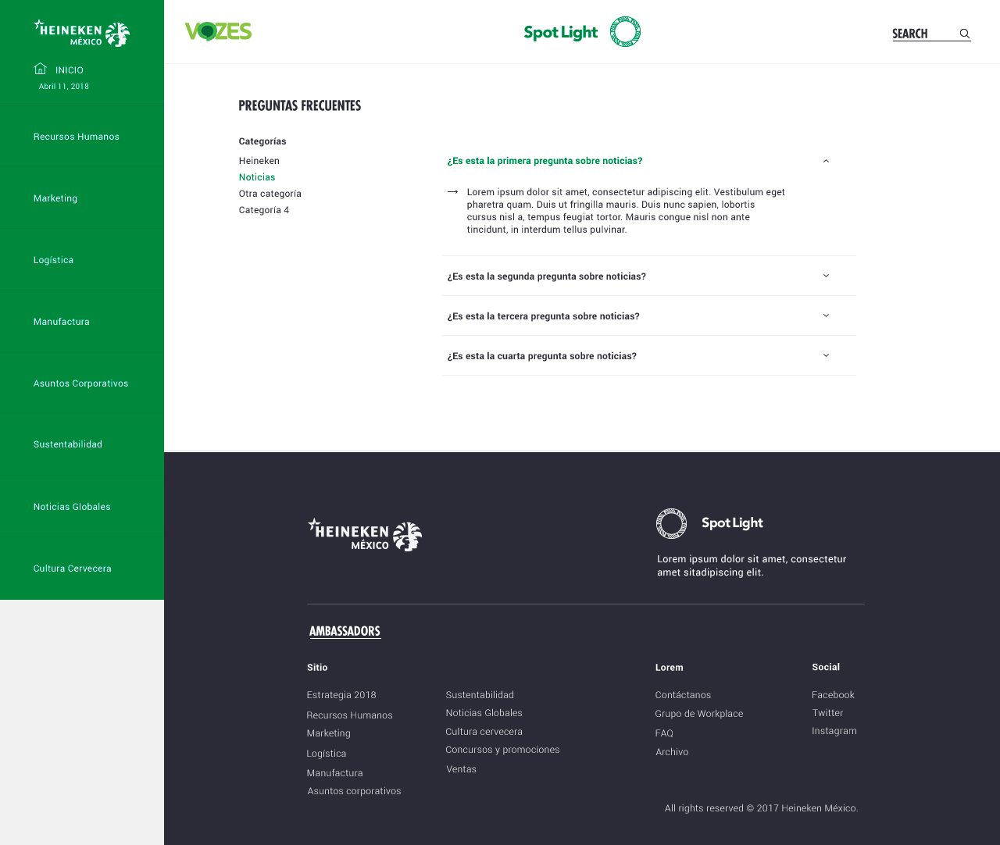
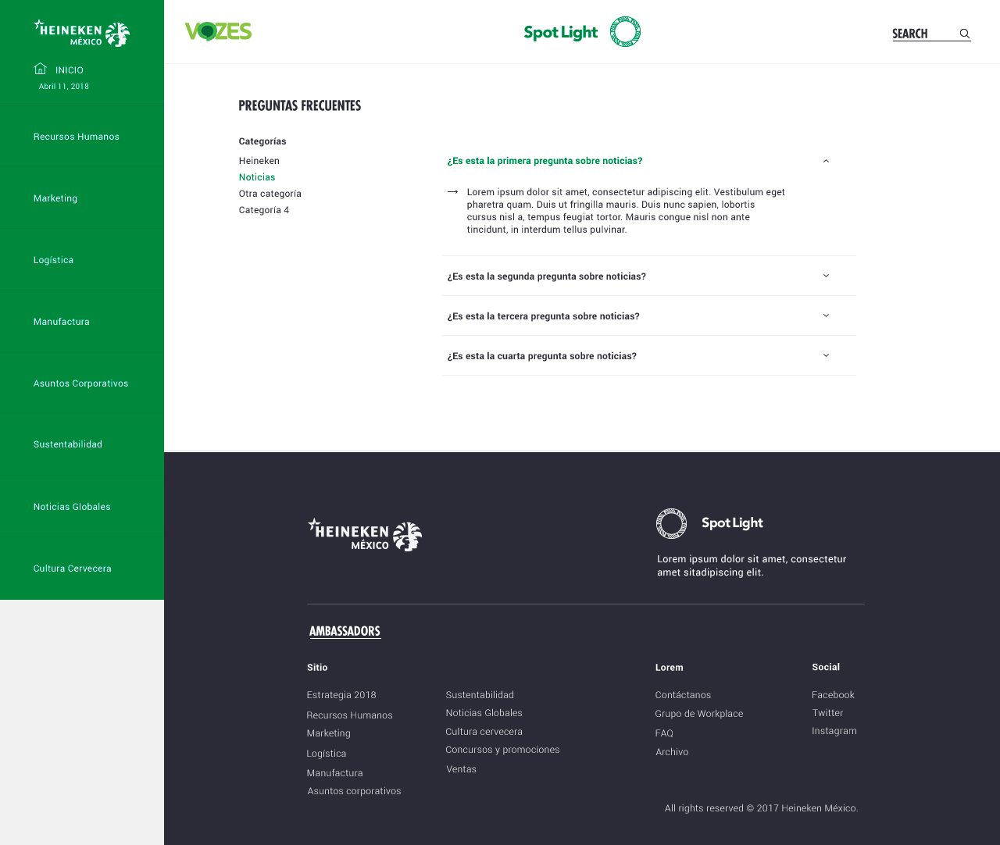

Realicé el diseño del sitio web institucional de la cervecería Cuauhtémoc Moctezuma en México. Este sitio muestra las noticias y eventos que han ocurrido dentro de la compañía. El cliente buscaba una propuesta renovada de su sitio, pero que aún así se viera institucional. El diseño partió de una plantilla de la página de inicio que el cliente había planteado con anterioridad.
Se hizo un primer acercamiento a la estructura completa que llevaría al sitio con wireframes y la primera propuesta gráfica resultó muy similar a la plantilla que nos entregaron:
Se hizo un primer acercamiento a la estructura completa que llevaría al sitio con wireframes y la primera propuesta gráfica resultó muy similar a la plantilla que nos entregaron:
Wireframes
El cliente consideró que se veía muy institucional e hizo la solicitud de una nueva propuesta:
 
